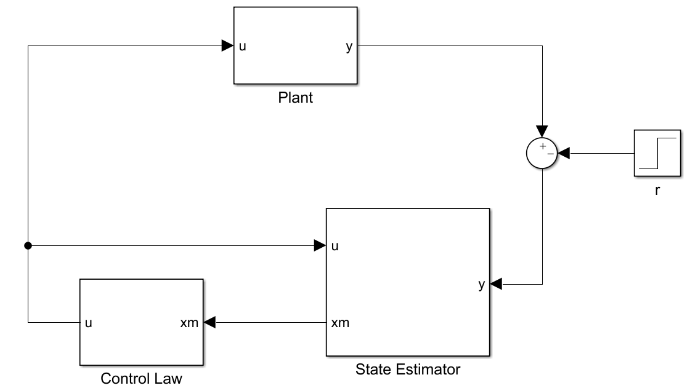

现代控制基础（5）：参考的引入
调节器只能将系统的各状态拉回到零位，而控制系统的根本目的是使被控对象的输出跟随参考信号，因此在调节器设计完成的基础上，还需要正确地引入参考信号。
设被控对象的状态空间方程为
\[\begin{split}\left\{
\begin{aligned}
\dot{\mathbf{x}} &= A \mathbf{x} + Bu \\
y &= C \mathbf{x}
\end{aligned}
\right.\end{split}\]
在实际的数字控制系统中，能够人为干涉的是状态的估计和控制律，因此，不失一般性地可以设参考信号 \(r\) 的引入方式为
\[\begin{split}\left\{ \begin{aligned}
\dot{\hat{\mathbf{x}}} &= \left( {{A} - {LC} - {BK}} \right) \hat{\bf x} + {L}y + {M}r \\
u &= - K {\hat{\bf x}} + Nr
\end{aligned} \right.\end{split}\]
参数 \(M\) 和 \(N\) 的设计方法可分为如下三种情况。
标准形式
从状态观测器的角度来考察，不希望参考信号的引入对状态估计产生影响，考察状态估计的误差为
\[\begin{split}\dot{\tilde{\mathbf{x}}} &= {A\mathbf{x}} + {B}\left( { - K{\hat{\bf x}} + Nr} \right) - \left[ {\left( {{A} - {LC} - {BK}} \right){\bf{\hat x}} + {L}y + {M}r} \right] \\
&= \left( {{A} - {LC}} \right){\bf{\tilde x}} + \left( {{B}N - {M}} \right)r\end{split}\]
因此，通过补充约束条件： \(M = BN\) ，即可避免参考信号对状态估计引入任何扰动。
此时，控制器的状态空间可以进一步改写为
\[\begin{split}\left\{ {\begin{array}{*{20}{l}}
{{\bf{\dot{\hat x}}} = \left( {{A} - {LC}} \right){\bf{\hat x}} + {B}u + {L}y}\\
{u = - K{\hat{\bf x}} + Nr}
\end{array}} \right.\end{split}\]
这就意味着状态观测器的输入与被控对象完全一致。这时，只需要对参考信号的增益 \(N\) 进行设计，设计的原则是令 \(r\rightarrow y\) 的增益为 \(1\) 即可。考察闭环系统的状态空间
\[\begin{split}\left\{ \begin{aligned}
\begin{bmatrix}
{{\bf{\dot{x}}}}\\
{{\bf{\dot{\tilde x}}}}
\end{bmatrix} &= \begin{bmatrix}
{{A} - {BK}}&{{BK}}\\
{0}&{{A} - {LC}}
\end{bmatrix}\begin{bmatrix}
{\bf{x}}\\
{{\bf{\tilde x}}}
\end{bmatrix}+ \begin{bmatrix}
{B}\\
{0}
\end{bmatrix}Nr \\
y &= \begin{bmatrix}
{C}&0
\end{bmatrix} \begin{bmatrix}
{\bf{x}}\\
{{\bf{\tilde x}}}
\end{bmatrix}
\end{aligned} \right.\end{split}\]
根据 \(r\rightarrow y\) 的增益为 \(1\) 解得
\[\begin{split} N = - {\left\{ {\left[ {\begin{array}{*{20}{c}}
{C}&0
\end{array}} \right]{{\left[ {\begin{array}{*{20}{c}}
{{A} - {BK}}&{{BK}}\\
{0}&{{A} - {LC}}
\end{array}} \right]}^{ - 1}}\left[ {\begin{array}{*{20}{c}}
{B}\\
{0}
\end{array}} \right]} \right\}^{ - 1}}\end{split}\]
这时整个系统的框图如下图所示。
误差控制
如果令 \(N=0\) ， \(M = -L\) ，即可得到基于误差控制的参考信号引入方式，这是经典控制中的常用方式，如下图所示。

这种简单的方式可以用传递函数来证明其可靠性，设开环传递函数为 \(H_{open}\) ，则 \(r\rightarrow y\) 的传递函数即为闭环传递函数
\[H_{close}=\frac{H_{open}}{1+H_{open}} \rightarrow 1\]
应当注意，上式成立的条件是 \(H_{open}\) 在带宽内具有足够的增益，这通常要求开环传递函数中存在一个或多个 \(\frac{1}{s}\) 项，若被控对象本身无法满足这一条件，可考虑在控制器中增加积分环节。
一般形式
更一般地，可以通过人为设计参数 \(M\) 和 \(N\) 来设计 \(r\rightarrow u\) 的零点从而改变 \(r\rightarrow y\) 的零点以改善系统的动态特性。 \(r\rightarrow u\) 的零点满足（这里关注 \(r\) ，可以暂时令 \(y=0\) ）
\[\begin{split}\begin{gathered}
\left| {\begin{array}{*{20}{c}}
{{I}s - \left( {{A} - {BK} - {LC}} \right)}&{ - {M}} \\
{ - {K}}&N
\end{array}} \right| = 0 \\
\Downarrow \\
\left| {{I}s - {A} + {BK} + {LC} - \frac{{M}}{N}{K}} \right| = \left| {{I}s - {A} + {BK} + {LC} - {{\bar MK}}} \right| = 0
\end{gathered}\end{split}\]
因此，我们可以首先根据零点对进行 \({\bar{M}}=\frac{M}{N}\) 设计，再根据 \(r\rightarrow y\) 的增益为 \(1\) 计算得 \(N\) 。
这种方式的系统框图如下图所示。
参考资料
Franklin, J. D. Powell, and A. Emami-Naeini, Feedback Control of Dynamic Systems, 7th ed. Upper Saddle River, NJ, USA: Prentice Hall Press, 2014.
另请参阅： 参考信号仿真测试